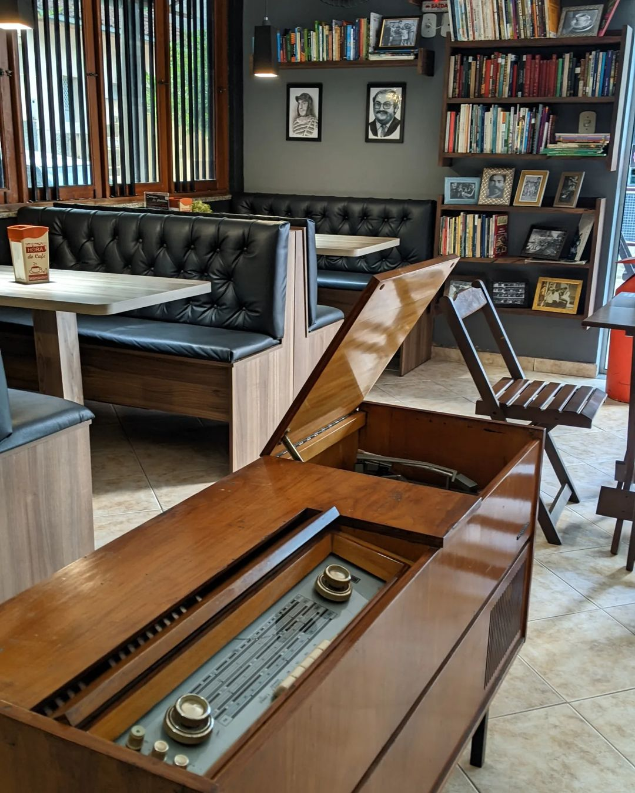
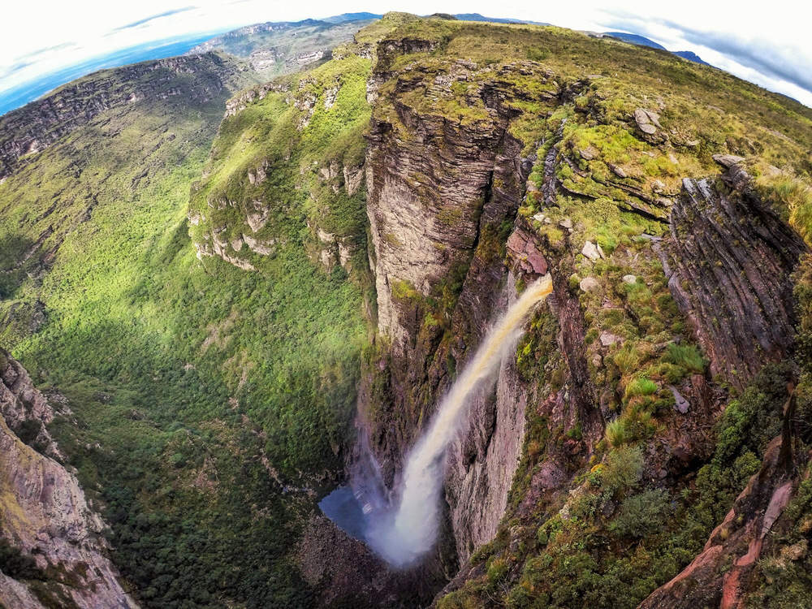

Casarão

A empresa Casarao, que tem a razão social M&J COMERCIAL
LTDA, está presente no segmento de Bares e Lanchonetes e
foi fundada em 27/02/2014. A empresa está localizada na
Rua Joao Tanure, 61, Guararema, em Alegre-ES,
CEP 29500-000.
Atividades secundárias:
- Estamparia e Texturização em Fios,
Tecidos, Artefatos Têxteis e Peças do Vestuário
- Comércio Varejista de Mercadorias em Geral, Com Predominância de Produtos Alimentícios -
Minimercados, Mercearias e Armazéns
- Comércio Varejista Especializado de Equipamentos e Suprimentos de Informática
Acesso a mais informações Aqui
Barbaros
A empresa Barbaros Burguer que tem como razão social Hyan Lucena Monegalha Goulart
foi fundada em 20/07/2020 e está cadastrada na Solutudo no segmento de Lanches -
Lanchonetes com o CNPJ 37.780.607/0001-41. No mercado, a empresa está localizada
na R Dr Wanderley, Nº 34 no bairro Centro em Alegre - ES, CEP 29500-000. A empresa
Barbaros Burguer está cadastrada na Receita Federal sob o CNAE 5611-2/03 com
atividade fim de Lanchonetes, Casas De Chá, De Sucos E Similares.
Acesso a mais informações Aqui
Cachoeira da fumaça

A Cachoeira da Fumaça é uma catarata brasileira localizada no Parque Estadual da
Cachoeira da Fumaça, entre os municípios de Alegre (Espírito Santo) e Ibitirama,
no Espírito Santo. Fica na Região do Caparaó e é um grande atrativo turístico.
Acesso a mais informações Aqui
Tabela sobre Alegre-ES
| Alegre |
| População estimada |
29.869 pessoas (2021) |
Fonte:
IBGE |
| Área territorial |
756,860 Km² |
| IDH |
0,721 |
| PIB |
R$ 476.962,31 |
| PIB per capita |
R$ 15.854,35 |